Public Art · Monumental Sculpture · Montego Bay, Jamaica
Together
We Rise.
A 62-foot monument by Scheed Cole at St James Place, Montego Bay. Commissioned by Christopher Issa and S Hotels, it honours Jamaica’s resilience and the people who helped the country recover after Hurricane Melissa.

The project
A nation rising
together.
Unveiled on 28 October 2026 on Jimmy Cliff Boulevard, Together We Rise gives physical form to the idea of a helping hand. Two monumental hands support a rising tree while figures below rescue, climb and rebuild together.
The commission followed the public response to Cole’s Doctor Bird at S Hotel. An initial idea centred on Jamaican music evolved after Hurricane Melissa into a tribute to survival, mutual support and renewal.
The meaning
Survival, support
and renewal.
The lower figures depict lives in danger: an older woman passes a baby towards safety, and a soldier reaches for a distressed woman. Higher up, rebuilding and everyday work point towards recovery.
The Tree of Life carries fourteen leaves, each associated with a healing plant and one of Jamaica’s parishes. A construction worker and a figure carrying bananas connect renewal with labour and agriculture. Together, these details honour the contribution of Jamaicans and supporters overseas.
The people
A helping hand.
A shared effort.
At the unveiling, Cole connected the work to his own experience of receiving food and shelter as a child. That act of kindness became a personal foundation for a monument about people sustaining one another.
More than thirty-five people contributed at different stages during a construction period of over six months, according to the Jamaica Observer’s August report. The sketches, small studies, metalwork and site photographs below offer glimpses of that collective process.
Official unveiling · 28 October 2026 · Montego Bay
A monument
for the city.
Completed in August, the work was formally unveiled on 28 October 2026, the hurricane’s first anniversary. Its setting on the Hip Strip invites residents and visitors to encounter the story in a shared public space. At the ceremony, Montego Bay’s deputy mayor highlighted its message of unity and its contribution to the city’s cultural identity.


Behind the scenes · Work in progress
Making
Together We Rise.
A glimpse into the making of Together We Rise — a selection of sketches, studies and moments on site, offering a small window into the work behind the monument.

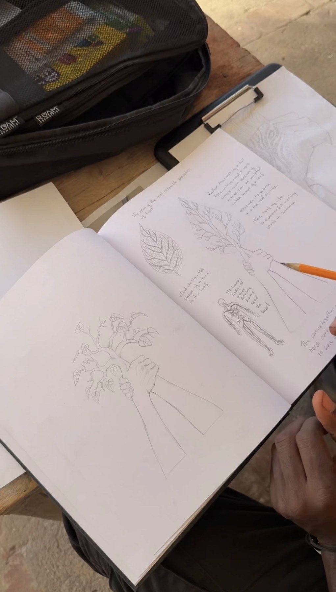

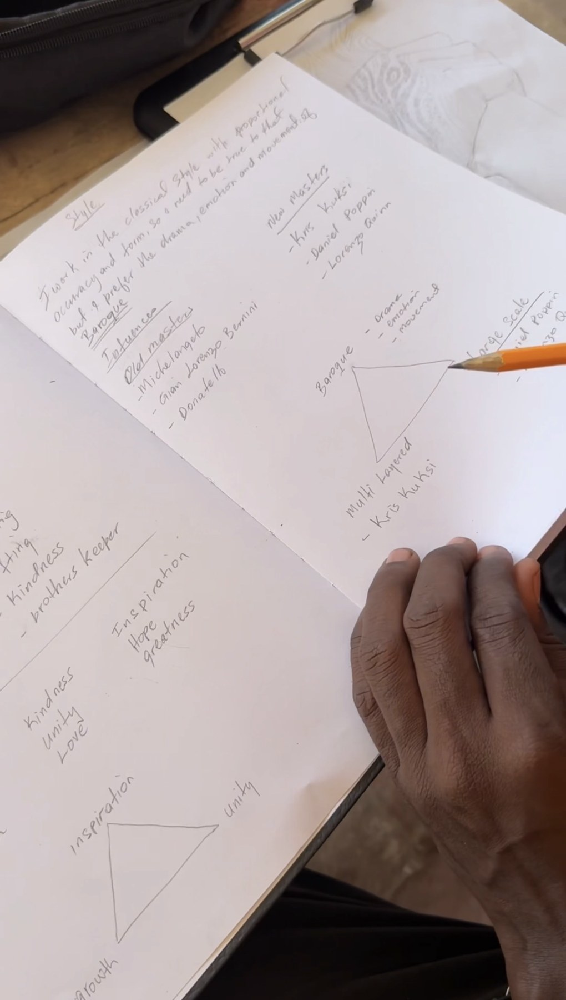

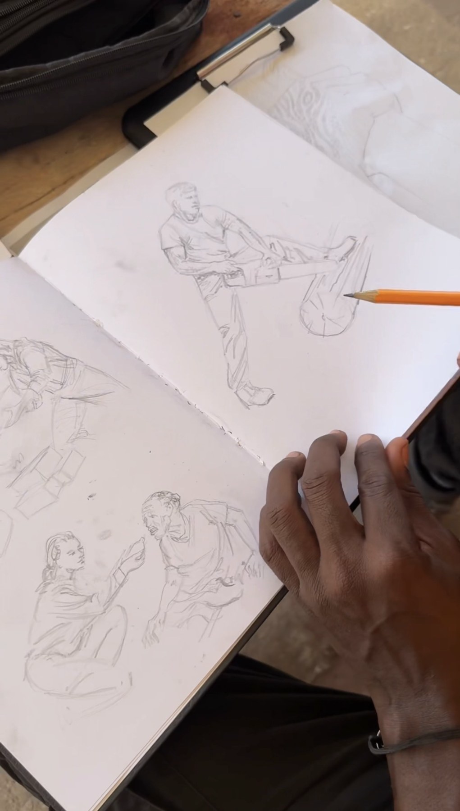

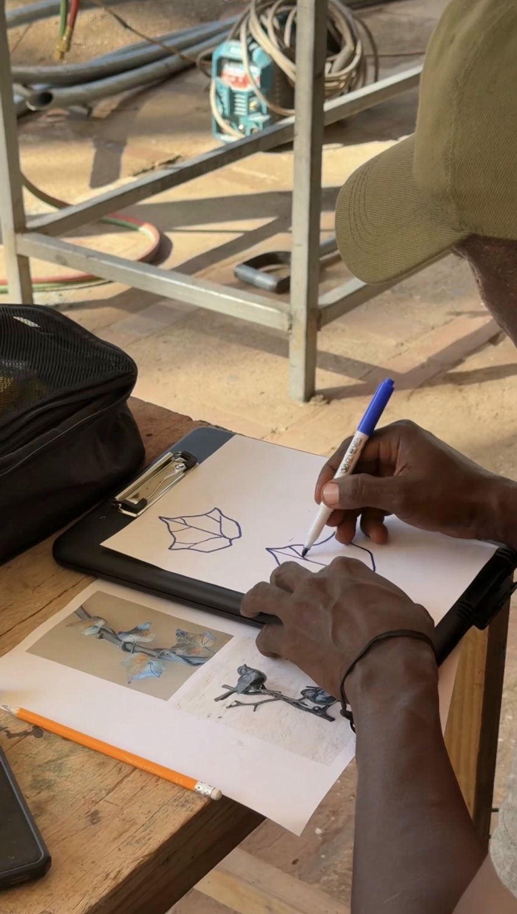

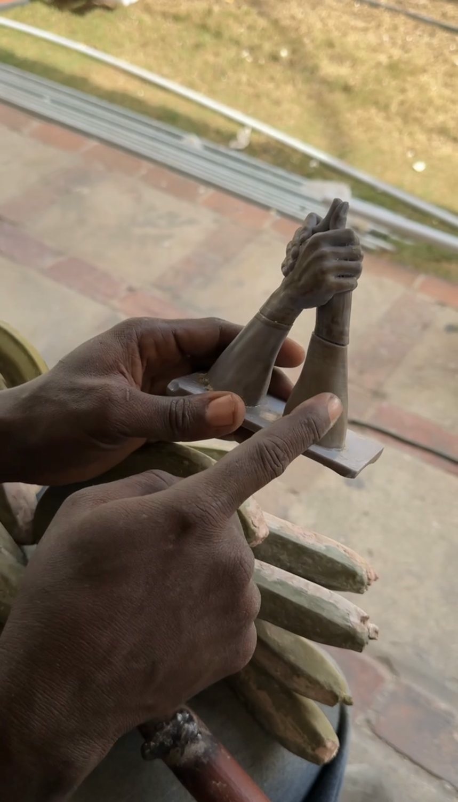

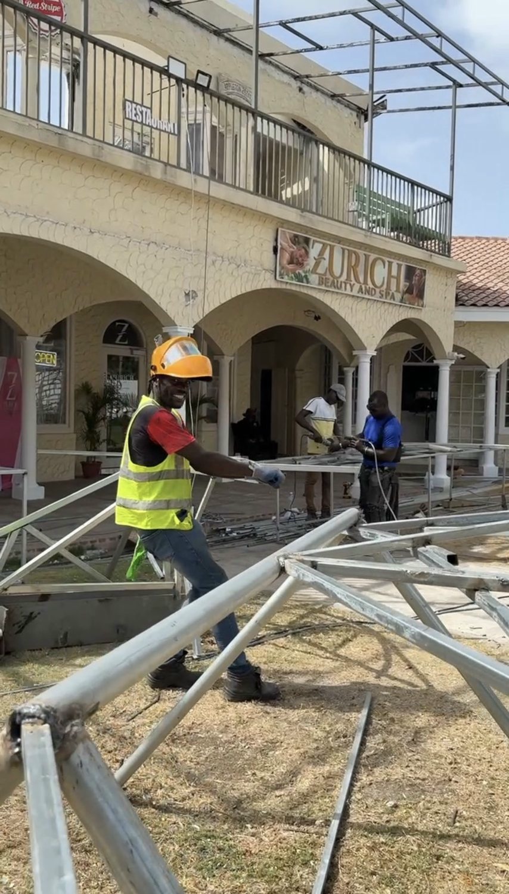

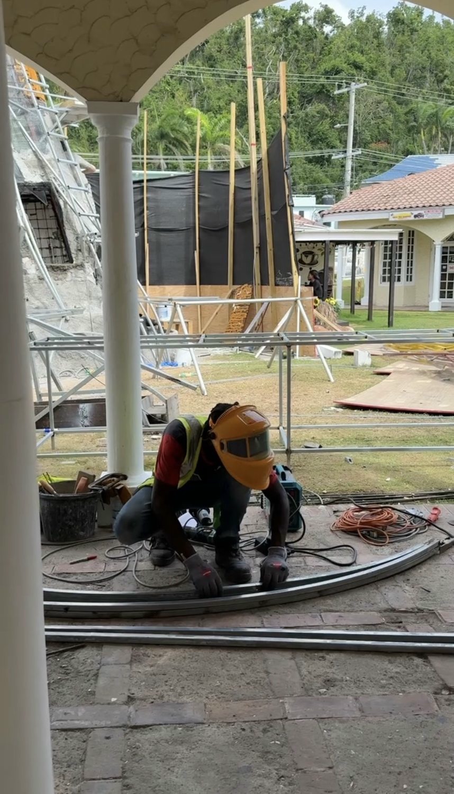

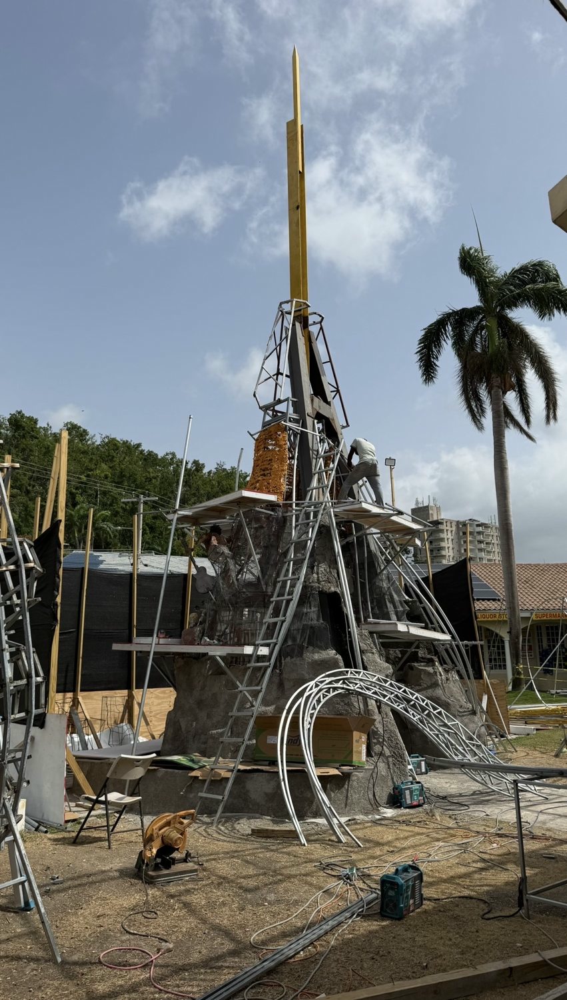

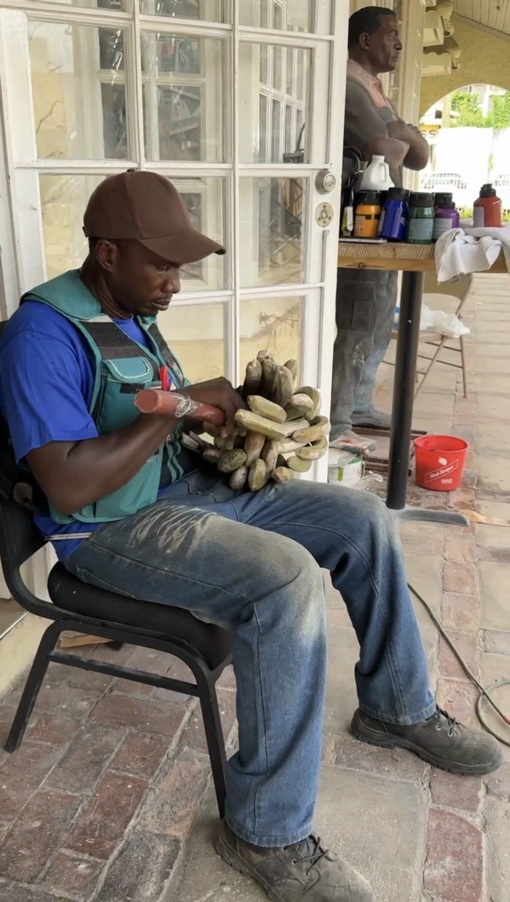

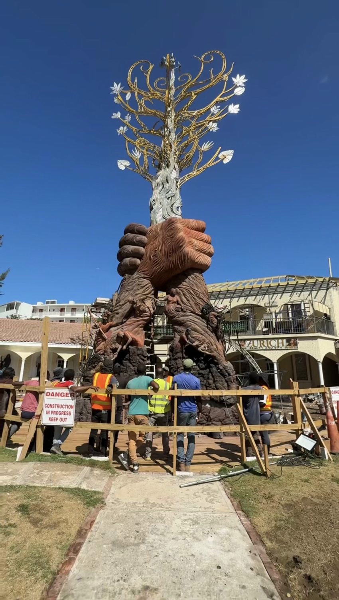

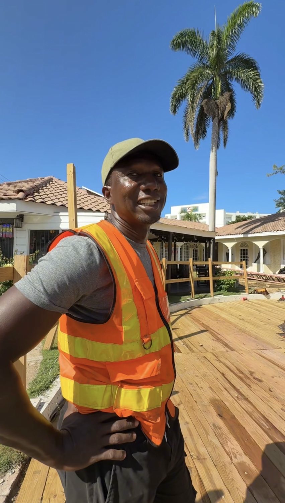

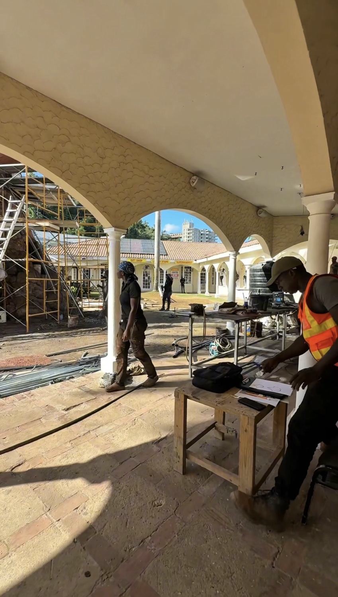
Behind the work
In conversation
with Scheed Cole.
The Artist Series by Nuf Creatives · Hart of Jamaica.
National and international commissions